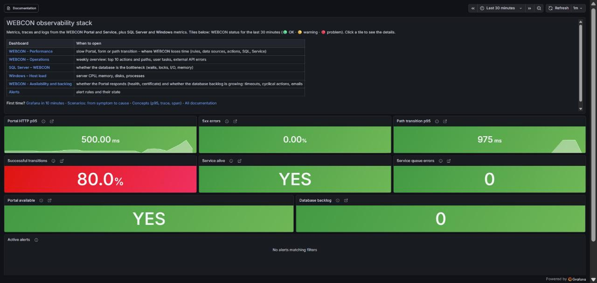

Grafana in 10 minutes¶
This chapter is for people who know WEBCON but have never used Grafana. After reading it, you will be able to open a dashboard, set the time range, filter the data, and go from a chart to the details of a single operation.
Sign-in and navigation¶
- Open Grafana – on the server http://localhost:3000, from another computer the address provided by your administrator (e.g.
http://server:3000). - Sign in with the account provided by your administrator (the Viewer role is enough for viewing).
- After signing in, you will see the Start screen (home dashboard, house icon): WEBCON status for the last 30 minutes in eight tiles, links to dashboards and documentation, and a list of active alerts. Clicking a tile opens “WEBCON – Performance”.

In the screenshot: Portal without traffic (gray / green tiles), Service alive = NO, and an active alert W4 No Service heartbeat – the WEBCON WorkFlow Service was running, but after the virtual machine was paused it stopped executing its work loop; fix: restart the WebCon WorkFlow Service service.
4. All dashboards: menu (☰, top left corner) → Dashboards. They are organized in folders:
| Folder | Dashboard | Question it answers |
|---|---|---|
webcon |
WEBCON – Performance | What is happening now, and where does the application lose time? |
webcon |
WEBCON – Operations | What did the last week look like? Which actions and paths are the slowest, who has the most tasks, are external APIs working? |
webcon |
WEBCON – Availability and backlog | Is the Portal responding, and is work piling up in the content database (timeouts, cyclical actions, emails)? |
sql |
SQL Server – WEBCON | Is the database a bottleneck? |
host |
Windows – Host load | Is the server short on CPU, memory, disk? |
dotnet |
ASP.NET Core | technical details of the Portal (Grafana community dashboards) |
Each dashboard has links to the others in the top right corner (the time range is carried over with the link) and a Documentation link to the description of its panels.
Start with WEBCON – Performance; a guide from symptom to cause: Scenarios.
Screen elements¶
┌──────────────────────────────────────────────────────────────────────────────────┐
│ Dashboards › webcon › WEBCON – Performance [⏱ Last 6 hours ▾] [⟳ 1m ▾] 🔗 │ ← time range, refresh, links
│ Service [All ▾] Database (DB ID) [All ▾] │ ← variables (filters)
├──────────────────────────────────────────────────────────────────────────────────┤
│ ▾ Status │ ← row (click to collapse/expand)
│ ┌────────┐┌────────┐┌────────┐ ... │
│ │ 12 req/s││ 0.8 s ││ 0.2 % │ │ ← tiles (stat)
│ └────────┘└────────┘└────────┘ │
│ ▸ Portal – user experience │ ← collapsed row
└──────────────────────────────────────────────────────────────────────────────────┘
Time range (top right corner)¶
- Click the clock (e.g. Last 6 hours) and select a range or enter your own (
now-2d→now, or specific dates). - Zooming in: select a part of a chart with the mouse (drag horizontally) – the whole dashboard switches to that range. To go back: the ⟵ button (Zoom out) or select the range again.
- “Dashboard time range” tiles (e.g. Successful transitions, Service queue errors) count over the entire selected range – their value changes when you change the range.
- The ⟳ arrow next to the clock refreshes the data; the drop-down list sets automatic refresh.
Time in Grafana is shown in your browser's time zone. Daily charts on the “WEBCON – Operations” dashboard count UTC days.
Variables (filters at the top)¶
The drop-down lists below the title filter all panels at once, e.g.:
| Dashboard | Variable | Meaning |
|---|---|---|
| WEBCON – Performance / Operations | Service | Portal (web application), WebCon.WorkFlow (WEBCON WorkFlow Service), or both |
| WEBCON – Performance | Database (DB ID) | WEBCON content database (installation with several content databases) |
| Windows – Host load | Host, Processes | the server and the processes shown on the process charts |
| SQL Server | Databases | databases on the per-database charts |
Panels¶
| Type | Appearance | How to read it |
|---|---|---|
| Tile (stat) | large number, background color | green = OK, yellow / orange = warning, red = problem. Color thresholds are described for each dashboard |
| Line chart | lines over time | hover to see the values at a point; click a name in the legend to show only that series (Ctrl+click = add another one) |
| Heatmap | colored rectangles | vertical axis = duration, color = how many operations took that long at a given moment; a bright cell high up = many slow operations |
| Table | rows and columns | click a header to sort; blue (underlined) values are links – usually to traces |
| Logs | list of records | click a record to expand its details (fields, trace_id) |
Each panel has an ⓘ icon in its header (panel description – what it shows and how to read it) and a ⋮ menu:
- View (v key) – panel in full screen,
- Explore – opens the panel query in exploration mode (for advanced users),
- Inspect → Data – panel data in a table, with the option to download a CSV.
“No data” in a panel usually means that the event has not occurred (e.g. Service queue errors appear only after the first error), not a failure.
Three kinds of data¶
The stack collects three kinds of information about WEBCON – and lets you move between them:
| Kind | What it is | WEBCON example | Where |
|---|---|---|---|
| Metrics | numbers collected every minute: how many, how fast, how much | 12 path transitions /min, Portal response time p95 0.8 s | charts and tiles |
| Traces | the course of a single operation step by step, with durations | form open: model 120 ms, rules 340 ms, REST data source 2.1 s, SQL 80 ms | “Where the time goes” tables, trace view |
| Logs | messages written by WEBCON | Error getting data for DataSource name: Exchange rates ID: 58 |
log panels |
Details of the concepts: Concepts.
Drilling down: from chart to root cause¶
This is the most important skill. A typical path:
red tile ─► chart (when?) ─► exemplar point or table (which operation?) ─► trace (which step?) ─► logs (what error?)
1. Exemplar – from a chart to a trace¶
On duration charts (e.g. Portal response time, Path transition time) you can see small points (diamonds) – these are exemplars: sample individual requests from a given moment. Hover over a point high on the chart (a slow request) and click Query with Tempo / View trace – the trace of that request opens.
2. Table – from a ranking to traces¶
In the “Where the time goes” tables (paths, rules, data sources, actions), click an identifier (e.g. a path ID) – a list of traces in which this operation occurred opens. Select a trace (e.g. the longest one).
3. Trace view¶
Portal: GET /api/nav/db/1/app/5/element/1234/form 2.8 s ████████████████████████████
webcon.elements_management.element.model.load 2.5 s ██████████████████████████
webcon.rule.execute (rule.id = 18) 0.3 s ███
webcon.data_source.data.load (data_source.id = 58) 2.1 s █████████████████████
HTTP GET api.nbp.pl 2.1 s █████████████████████
SELECT [WFElements] 0.05 s █
- Each row is a span – one step of the operation; indentation = a step inside the parent step.
- Bar length = duration. Look for the longest bar deepest in the tree – it is usually the cause (here: data source 58 calling an external API).
- Click a span to see its attributes:
webcon.rule.id,webcon.data_source.id,webcon.path.id,webcon.user.login,http.route,db.query.text(SQL query text), etc. The identifiers correspond to the IDs in WEBCON Designer Studio. - A red marker next to a span = error (e.g. HTTP 500 from an external API).
4. From a trace to logs and from logs to a trace¶
- In the trace view, the logs icon next to a span (Logs for this span) shows WEBCON logs with the same
trace_id. - In a log panel, expand a record – the Open trace button next to the
trace_idfield opens the trace in which the log was written.
Explore – your own questions (optional)¶
Menu → Explore is a free-form query mode. Useful even without knowing the query languages:
- Tempo → Search: filter by service name (
Portal), span name, duration (> 2s) – a list of traces. - Loki → Label browser / builder: select
service_name = Portal, levelerror– a list of errors. - Sample TraceQL queries (Tempo):
{ name = "webcon.data_source.data.load" && span.webcon.data_source.id = 58 } # calls of data source 58
{ name = "webcon.elements_management.path.transitions" && duration > 5s } # path transitions longer than 5 s
{ span.webcon.user.login =~ ".*smith.*" && kind = server } # requests of a user
IDs in WEBCON are numbers – in TraceQL, use them without quotes.
What Grafana does not do here¶
- Dashboards are read-only: changes to dashboards in the
webcon,sql,hostfolders are lost when the stack is upgraded. For your own dashboard: Save as a new one. - Alerts do not send emails or messages – they are visible only in Grafana: Alerts.